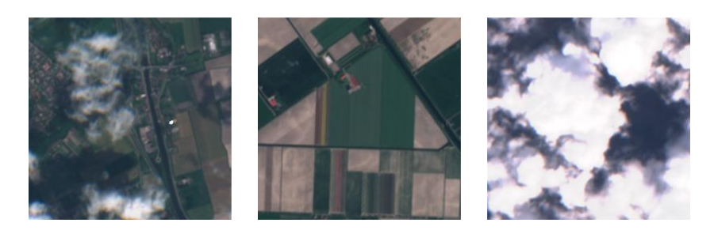
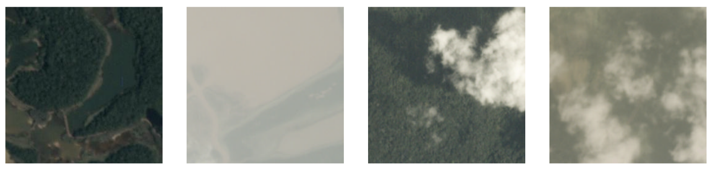

Large Scale Landuse Classification of Satellite Imagery
Suneel Marthi
June 11, 2018
Berlin Buzzwords, Berlin, Germany
$WhoAmI
Suneel Marthi
@suneelmarthi
- Member of Apache Software Foundation
- Committer and PMC on Apache Mahout, Apache OpenNLP, Apache Streams
Agenda
- Introduction
- Data description
- Cloud classification
- Segmentation
Goal: Identify Tulip fields from Sentinel-2 satellite images
Workflow
Data: Sentinel-2
Earth observation mission from ESA
13 spectral bands, from RGB to SWIR (Short Wave Infrared)
Spatial resolution: 10m/px (RGB bands)
5 day revisit time
Free and open data policy
Data acquisition
Images downloaded using Sentinel Hub’s WMS (web mapping service)
Download tool from Matthieu Guillaumin (@mguillau)
Data
256 x 256 px images, RGB
Workflow
Cloud filtering
Need to remove cloudy images before segmenting
Approach: train a Neural Network to classify images as clear or cloudy
Tested CNNs: ResNet50 and ResNet101
Cloud filtering: training data
‘Planet: Understanding the Amazon from Space’ Kaggle competition
40K images labeled as clear, hazy, partly cloudy or cloudy
Cloud Filtering: Training data(2)
| Origin | No. of Images | Cloudy Images |
|---|---|---|
| Kaggle Competition | 40000 | 30% |
| Sentinel-2(hand labelled) | 5000 | 50% |
| Total | 45000 | 32% |
Only two classes: clear and cloudy (cloudy = haze + partly cloudy + cloudy)
Training data split
Results
| Model | Accuracy | F1 | Epochs (train + finetune) |
|---|---|---|---|
| ResNet50 | 0.983 | 0.986 | 23 + 7 |
| ResNet101 | 0.978 | 0.982 | 43 + 9 |
Choose ResNet50 for filtering cloudy images
Example Results
Data Augmentation
import Augmentor
p = Augmentor.Pipeline(img_dir)
p.skew(probability=0.5, magnitude=0.5)
p.shear(probability=0.3, max_shear=15)
p.flip_left_right(probability=0.5)
p.flip_top_bottom(probability=0.5)
p.rotate_random_90(probability=0.75)
p.rotate(probability=0.75, max_rotation=20)
Example Data Augmentation
Workflow
Segmentation Goals
Approach U-Net
- State of the Art CNN for Image Segmentation
- Commonly used with biomedical images
- Best Architecture for tasks like this
O. Ronneberger, P.Fischer, and T. Brox. U-net: Convolutional networks for biomedical image segmentation. arxiv:1505.04597, 2015
U-Net Architecture
U-Net Building Blocks
def conv_block(channels, kernel_size):
out = nn.HybridSequential()
out.add(
nn.Conv2D(channels, kernel_size, padding=1, use_bias=False),
nn.BatchNorm(),
nn.Activation('relu')
)
return out
def down_block(channels):
out = nn.HybridSequential()
out.add(
conv_block(channels, 3),
conv_block(channels, 3)
)
return out
U-Net Building Blocks (2)
class up_block(nn.HybridBlock):
def __init__(self, channels, shrink=True, **kwargs):
super(up_block, self).__init__(**kwargs)
self.upsampler = nn.Conv2DTranspose(channels=channels, kernel_size=4,
strides=2, padding=1, use_bias=False)
self.conv1 = conv_block(channels, 1)
self.conv3_0 = conv_block(channels, 3)
if shrink:
self.conv3_1 = conv_block(int(channels/2), 3)
else:
self.conv3_1 = conv_block(channels, 3)
def hybrid_forward(self, F, x, s):
x = self.upsampler(x)
x = self.conv1(x)
x = F.relu(x)
x = F.Crop(*[x,s], center_crop=True)
x = s + x
x = self.conv3_0(x)
x = self.conv3_1(x)
return x
U-Net: Training data
|
|
Loss function: Soft Dice Coefficient loss
Prediction = Probability of each pixel belonging to a Tulip Field (Softmax output)
ε serves to prevent division by zero
Evaluation Metric: IoU
Aka Jaccard Index
Similar to Dice coefficient, standard metric for image segmentation
Results
- IoU = 0.73 after 23 training epochs
- Related results: DSTL Kaggle competition
- IoU = 0.84 on crop vs building/road/water/etc segmentation
https://www.kaggle.com/c/dstl-satellite-imagery-feature-detection/discussion/29790
Was ist Apache Beam?
- Agnostic (unified Batch + Stream) programming model
- Java, Python, Go SDKs
- Runners for Dataflow
- Apache Flink
- Apache Spark
- Google Cloud Dataflow
- Local DataRunner
Warum Apache Beam?
- Portierbar: Code abstraction that can be executed on different backend runners
- Vereinheitlicht: Unified batch and Streaming API
- Erweiterbare Modelle und SDK: Extensible API to define custom sinks and sources
NMT Inference Pipeline

Credits
- Jose Contreras, Matthieu Guillaumin, Kellen Sunderland (Amazon - Berlin)
- Ali Abbas (HERE - Frankfurt)
- Apache Beam: Pablo Estrada, Lukasz Cwik, Sergei Sokolenko (Google)
- Pascal Hahn, Jed Sundvall (Amazon - Germany)
- Apache OpenNLP: Bruno Kinoshita, Joern Kottmann
Links
- Earth on AWS: https://aws.amazon.com/earth/
- Semantic Segmentation - U-Net: https://medium.com/@keremturgutlu/semantic-segmentation-u-net-part-1-d8d6f6005066
- ResNet: https://arxiv.org/pdf/1512.03385.pdf
- U-Net: https://arxiv.org/pdf/1505.04597.pdf
Links (contd)
- Apache Beam: https://beam.apache.org
- Slides: https://smarthi.github.io/BBuzz18-Satellite-image-classification-for-landuse
- Code: https://github.com/smarthi/satellite-images